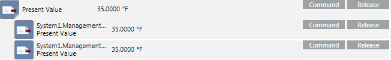

Multiple-Object Commanding
With multiple-object commanding, you are not really commanding objects at all. Instead, you are commanding one property type, Present Value for instance, for more than one object of the same type.
If you select multiple objects of the same type, for example, Analog Output, the icon next to the property name indicates this with a triangular symbol in the lower right-hand corner. Clicking this symbol expands the table row to show all of the selected objects of the same type that share this property. You can then change (command) all Present Value properties for the selected objects at the same time. You can command a maximum of 250 objects.
In the following graphic, the system indicates that you have selected multiple objects by displaying a triangular symbol in the lower right-hand corner of the Present Value icon.
The following graphic shows that you have clicked the triangular icon. The system now displays two additional rows, which represent two selected objects of the same type.
